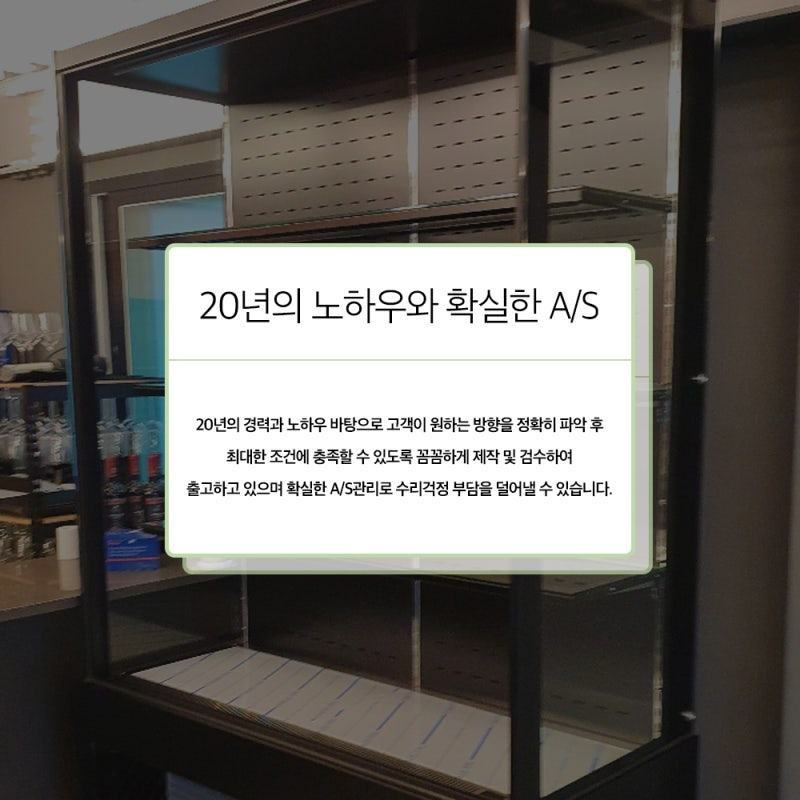
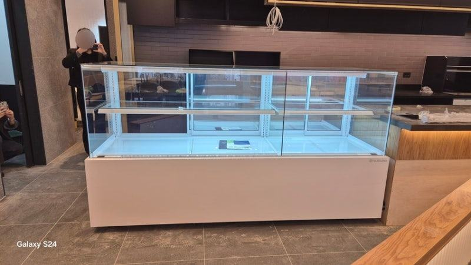
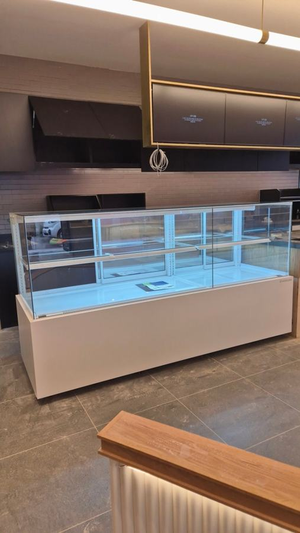

쇼케이스 이용 및 관리
미니쇼케이스 대형쇼케이스 차이, 매장 크기보다 먼저 볼 것

미니쇼케이스는 카운터 위나 좁은 벽면에 두고 소수 품목을 눈높이 가까이 보여 주는 데 맞고, 대형쇼케이스는 품목이 많고 하루 판매량이 많아 자주 채워야 하는 매장에 맞습니다. 매장 크기만 보고 고르기보다 하루에 몇 번 채우는지, 손님이 어느 높이에서 보는지를 기준으로 정하시는 게 정확합니다.
안녕하세요. 작은 탁상형부터 벽면을 채우는 대형까지 쇼케이스를 맞춤 제작하는 한성쇼케이스입니다.
1인 창업이나 작은 카페를 준비하시는 사장님들은 "매장이 작으니 미니쇼케이스면 되겠죠?" 하고 물으시고, 반대로 넓은 매장을 여시는 분들은 일단 크게 가야 한다고 생각하십니다.
그런데 막상 운영해 보면 크기 선택이 거꾸로 됐다는 이야기를 종종 듣습니다.
작은 매장인데 회전이 빨라 하루에도 몇 번씩 채워야 하거나, 넓은 매장인데 진열할 품목이 몇 가지뿐이라 큰 쇼케이스가 휑해 보이는 경우죠.
오늘은 미니쇼케이스와 대형쇼케이스가 실제로 무엇이 다른지, 우리 매장에는 어느 쪽이 맞는지 판단하는 기준을 정리해 드리겠습니다.
1. 크기보다 중요한 판매 방식의 차이
미니쇼케이스는 손님 눈높이 가까이에서 몇 가지 상품을 또렷하게 보여 주는 장비입니다. 카운터 옆 마카롱, 계산대 위 병음료, 디저트 카페의 시그니처 케이크처럼 고르는 시간이 짧고 품목이 적을 때 강점이 있습니다.
대형쇼케이스는 품목 수가 많고 같은 상품을 여러 줄로 쌓아 두는 매장에 맞습니다. 한 번 채워 두면 피크 시간 내내 버틸 수 있어, 직원이 손님 응대 중에 보충하러 오가는 일이 줄어듭니다.
- 진열할 품목 수를 적어 보세요.
- 피크 시간에 몇 번 채워야 하는지 따져 보세요.
2. 냉기 유지와 회복력
내부 공간이 작은 미니쇼케이스는 문을 한 번 열 때 빠져나가는 냉기의 비율이 큽니다. 손님이 자주 여닫는 자리에 둔다면 냉기가 다시 내려오는 속도와 문 패킹 상태가 더 중요해집니다.
대형쇼케이스는 내부 공간이 넓어 위아래, 앞뒤 온도 차가 생기기 쉽습니다. 팬으로 냉기를 고르게 돌리는 구조인지, 끝 칸까지 같은 온도가 유지되는지를 확인해 보세요.
크기가 다르면 확인할 지점도 달라집니다.


3. 설치 자리와 공간 활용
미니쇼케이스는 카운터 위나 벽 선반에 올리는 경우가 많아 상판 하중, 콘센트 위치, 뒷면 열이 빠질 공간을 함께 봐야 합니다.
작은 장비라고 벽에 바짝 붙이면 열이 갇혀 냉각이 오래 돌아갑니다.
대형쇼케이스는 반입 경로가 먼저입니다. 출입문 폭이나 계단 때문에 들어가지 못하는 경우가 있어 분리 제작을 검토해야 할 때도 있습니다.
손님 통로와 직원 작업 공간이 겹치지 않는지도 미리 그려 보세요.
- 미니형은 올려 둘 자리의 하중과 콘센트를 확인하세요.
- 대형은 출입문 폭과 반입 경로를 먼저 재 보세요.
4. 애매할 때는 맞춤 크기로
기성 미니쇼케이스는 너무 작고 대형은 너무 큰, 그 사이의 매장이 가장 많습니다. 이럴 때 억지로 한쪽에 맞추면 남는 틈이 생기거나 진열이 모자랍니다.
맞춤 제작을 하면 단 높이, 가로 길이, 소재, 온도 조절, 색상을 매장에 맞춰 정할 수 있습니다. 작은 매장에 미니형 두 대를 나란히 두기보다 한 대를 원하는 길이로 맞추는 편이 깔끔한 경우도 있습니다.
상담 때는 진열할 상품 사진과 하루 판매량, 놓을 자리 치수만 알려 주셔도 충분합니다. 그 정보를 바탕으로 미니형으로 갈지, 대형으로 갈지, 그 사이 길이로 맞출지를 함께 판단해 드리고, 국내 최초로 상주하는 쇼케이스 전문 디자이너가 매장 분위기에 맞는 외관까지 같이 잡아 드립니다.
체크리스트
- 진열 품목 수와 하루 보충 횟수
- 손님이 보는 눈높이
- 문 여닫는 빈도와 냉기 회복력
- 올려 둘 자리의 하중과 콘센트
- 출입문 폭과 반입 경로
- 뒷면 열 배출 공간
현장에서 자주 보는 경우: 미니쇼케이스가 매장에 어정쩡하게 들어갈 때
가게를 열면서 시중의 미니쇼케이스를 들였는데, 길이와 크기가 정해져 있다 보니 공간에 딱 맞지 않아 어정쩡해 보인다는 상담을 자주 받습니다.
작은 장비라도 매장에 맞지 않으면 전체 이미지가 흐트러집니다.
그래서 미니쇼케이스도 매장 사진과 치수를 먼저 받아 충분히 상의한 뒤 크기를 정하고, 직접 생산해 원하시는 날짜에 맞춰 배송과 설치까지 진행합니다.
설치 후에도 주기적인 점검과 수리를 이어서 관리해 드리고 있습니다.





자주 묻는 질문
작은 카페인데 대형쇼케이스를 두면 안 될까요?
품목이 많고 회전이 빠르다면 오히려 맞을 수 있습니다. 다만 통로와 카운터 작업 공간이 충분히 남는지 도면에서 먼저 확인해 보세요.
미니쇼케이스 두 대와 대형 한 대 중 무엇이 나을까요?
온도가 다른 상품을 나눠 보관해야 한다면 두 대가 편합니다. 같은 온도대 상품이라면 한 대를 원하는 길이로 맞추는 편이 공간과 관리 면에서 깔끔합니다.
직접 보고 고를 수 있나요?
직영 공장에서 미니쇼케이스와 다른 쇼케이스 샘플을 직접 보실 수 있습니다. 방문 전에 연락 주시면 매장 치수에 맞는 구성을 미리 준비해 안내해 드립니다.
매장 조건에 맞춰 만드는 한성쇼케이스
원하시는 제품 사진과 설치할 공간 사진만 보내 주셔도 매장에 맞는 구성을 추천해 드립니다.
- 전국 240여 개 A/S 전담 센터 운영
- 본사 대량 자재 매입으로 품질 대비 합리적인 가격
- 유럽제·삼성 냉각 콤프레셔 적용
- 국내 최초 쇼케이스 전문 디자이너 상주
매장 폭과 원하는 진열 구성을 알려 주세요. 실측과 견적을 안내해 드립니다.
031-986-2458